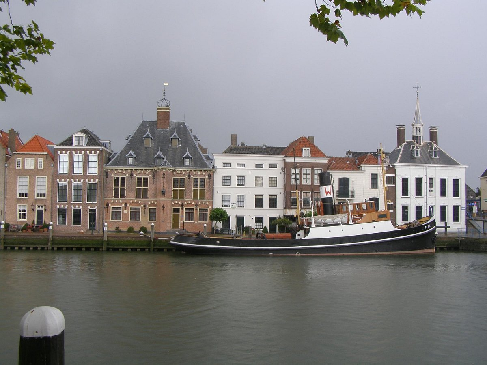

Het Nationaal Sleepvaart Museum

Het Nationaal Sleepvaart Museum is een aan sleepboten, berging en
bijbehorende bedrijfstakken gewijd museum in de stad Maassluis in
de Nederlandse provincie Zuid-Holland.
Het museum werd opgericht
door belangstellenden en verwante bedrijven en werd met hulp van
de gemeente Maassluis op 18 april 1979 geopend in het monumentale
oude stadhuis van Maassluis.
Tien jaar later kon het museum alweer
uitbreiden naar het naastgelegen pand
Exposities sleepvaartmuseum
In de permanente tentoonstelling wordt ingegaan op de rol van
sleepboten op open zee en en op de havensleepdiensten.
Zo worden
talloze afbeeldingen getoond over sleepboten en sleepbootfirma's.
Het museum beschikt over ruim 150 modellen van sleepboten en andere
vaartuigen.
Het museum beschikt over een reconstructie van een
radiohut uit circa 1910-20, compleet met authentieke apparatuur
van onder meer Marconi en Telefunken.
Ook zijn voorwerpen en
beeldmateriaal bijeengebracht over het bergingswerk, duikwerk en
de Rijn- en binnenvaart.
In wisseltentoonstellingen besteedde
het museum aandacht aan onder meer de bedrijven Wijsmuller en Smit,
de sleepvaart in oorlogstijd en aan de berging van de Russische
onderzeeër Koersk.
Ten slotte beschikt het museum over een
bibliotheek en documentatiecentrum.
De grote kerk
De Groote Kerk (ook wel Nieuwe Kerk) is een kerk in de Nederlandse
stad Maassluis die tussen 1629 en 1639 is gebouwd. Op 9 oktober 1639
is de kerk officieel geopend.
De kerk is onder meer bekend om
zijn Garrels-orgel.
De Groote kerk werd zo genoemd omdat Maassluis
al een kleinere kerk had die omstreeks het jaar 1500 werd gebouwd,
en die na de opening van de Groote kerk werd gesloten.
geschiedenis van de grote kerk
De kerk staat op het Kerkeiland, waar een halve eeuw eerder een schans
was opgericht ter bescherming tegen de Spaanse troepen.
De bevolking
was de Tachtigjarige Oorlog echter moe en heeft, jaren voor het einde
van de oorlog, de schans afgebroken.
De bouw van de Groote Kerk
werd gefinancierd door heffingen op de haringvangst.
De kerk werd
gebouwd naar het voorbeeld van de enkele jaren eerder gebouwde Amsterdamse
Noorderkerk, eveneens een centraalbouw met een plattegrond in de vorm
van een Grieks kruis.
In tegenstelling tot het Amsterdamse voorbeeld
vertoont de Groote Kerk nog vormen uit de gotiek, met name de
spitsboogvensters.
Bijzonder is dat het gebouw vanaf het begin
als Protestantse kerk gebouwd is.
Het is hiermee een van de
eerste Protestantse kerken in Nederland.
De bouw duurde langer
dan gepland, hetgeen werd veroorzaakt door "schade aan lijf en goed"
in de strijd tegen de Duinkerker kapers.
Oorspronkelijk werd de
kerk bekroond door een grote vieringtoren.
Toen deze te zwaar bleek
werd deze vervangen door een kleinere, en werd van 1648 tot 1650 de
huidige westtoren gebouwd, ontworpen door Arent van 's-Gravesande.